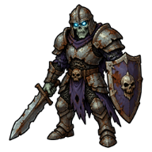
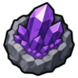
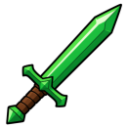

Wight
Level 65 · 🏚️ Bleakhaven Ruins
| Property | Value |
|---|---|
| Weakness | 🔮 Magic |
| Hitpoints | 195 |
| Attack | 58 |
| Strength | 48 |
| Defence | 42 (+65 armour) |
| XP per kill | 920 |
| Slayer | 💀 Reaper Joss gives tasks here (Slayer 45, combat 70) |
Drops
| Item | Amount | Chance |
|---|---|---|
| 400–900 | Always | |
| 2–5 | 60% | |
 Amethyst Ore | 1–2 | 30% |
| 1 | 1 in 25 | |
 Viridian Sword | 1 | 1 in 67 |